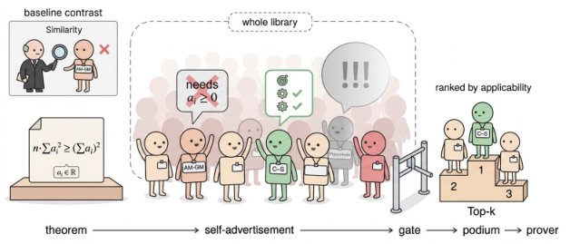

Builds a library of 82 Method Contracts with Mathlib anchors and Lean-checked scaffolds, and selects methods to guide an LLM-based Lean prover.
Abstract
LLM-based formal provers can retrieve relevant lemmas and prior proofs, but relevance alone does not say whether a mathematical method can be used on the current theorem. A method has prerequisites, a target, an intended action, and obligations that its use leaves to prove. Methods that look equally related to a theorem may therefore differ substantially in whether they offer a plausible next step. We formulate this as an applicability-aware method-selection problem and introduce self-advertisement: before candidates are ranked, a model generates a problem-specific proposal for each one, stating what part of the goal it targets, what action it would take, and what conditions that action requires. We organize 82 reusable methods from Putnam 2000-2014 as Method Contracts, which pair applicability descriptions with Mathlib anchors, a checked example or scaffold, and expected proof obligations. A single batched call elicits proposals across the library; vague or unsupported proposals are demoted, yielding a ranked shortlist accompanied by inspectable claims about each candidate's use. We analyze when similarity-based representations cannot distinguish methods with different applicability, how errors in applicability estimates affect shortlist quality, and what a checked scaffold guarantees under its stated assumptions. Against lexical, embedding, and embedding-plus-LLM reranking baselines, self-advertisement achieves 95.0% hit@5 on Putnam 2015-2025, compared with 84.2% for the strongest reranker. On IMO ProofBench, it achieves 91.7% compared with 88.3%. These results indicate improved coverage of annotated methods in the retrieved shortlists, particularly on Putnam.
Problem
LLM-based formal provers retrieve lemmas and proofs by relevance. Relevance does not show whether a mathematical method is actually applicable to the current Lean goal, given its prerequisites and the obligations it leaves.
Approach
Method selection is framed as an applicability-aware retrieval problem over 82 Method Contracts drawn from Putnam 2000–2014. Each contract pairs an applicability description with Mathlib anchors, a Lean-checked example or scaffold, and expected proof obligations. In one batched call, an LLM writes a problem-specific proposal (target, action, required conditions) for every contract. A commitment gate demotes vague or unsupported proposals, and a tiered ranking produces the shortlist; an optional runoff refines the top choice.

Figure 1: Self-advertised method selection. Given a theorem, a single model call asks every contract in the library how it would be used. A gate demotes proposals that are vague (Pigeonhole) or unsupported (AM-GM, since a_{i}\geq 0 is not given), and the top-ranked contract (Cauchy–Schwarz) goes to the prover. Inset: similarity retrieval would pick AM-GM instead.
Results
Self-advertisement reaches 95.0% hit@5 on Putnam 2015–2025, versus 84.2% for the strongest embedding-plus-LLM reranker. On IMO ProofBench it reaches 91.7% versus 88.3%. Adding the top-ranked contract to a fixed-budget proof loop increases the number of problems proved, e.g. 12.5% vs 5.8% on Putnam for the AxProverBase baseline.
Method
Putnam All
IMO Basic
IMO Adv.
IMO All
pass@20
0.8
3.3
0.0
1.7
APOLLO
2.5
13.3
0.0
6.7
AxProverBase
5.8
20.0
0.0
10.0
+ Self-adv. contract
12.5
26.7
3.3
15.0
Downstream proving success (%) in a fixed-budget proof loop